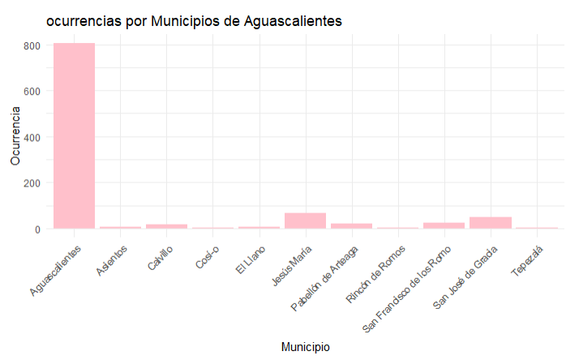
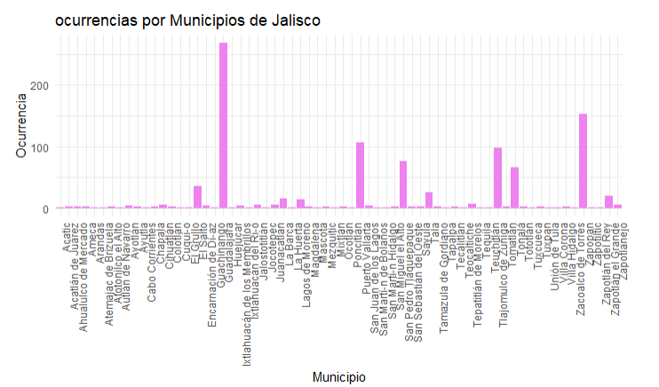
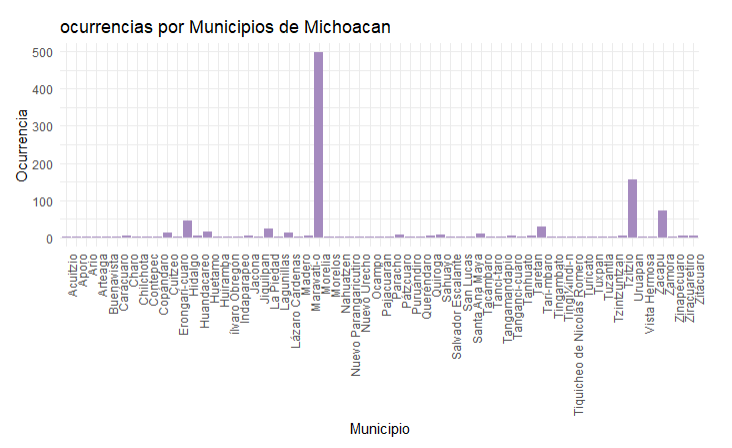
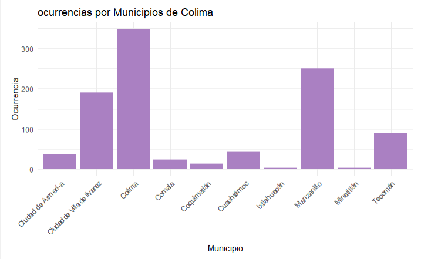

El informe analiza los registros oficiales de violencia reportados por el BANAVIM durante el primer trimestre de 2023 y se centra en cinco entidades del centro del país: Aguascalientes, Jalisco, Colima, Michoacán y San Luis Potosí. El propósito principal es reconocer los patrones con los que se presentan los casos, cómo se distribuyen territorialmente y qué modalidades de violencia son más frecuentes. Para ello se trabajó con herramientas estadísticas en R, un lenguaje que permitió organizar, limpiar y visualizar la información de una manera clara. La revisión inició con la integración de la base principal y cinco bases adicionales por estado. Aunque originalmente se contaba con 17 variables, solo se conservaron aquellas que aportaban información útil y verificable para el análisis, como las fechas del hecho y del registro, el estado, el municipio, la modalidad de violencia, si la víctima conocía a su agresor y la presencia de armas o drogas. Otras variables de carácter más cualitativo, como el lugar donde ocurrió el hecho, fueron descartadas porque no aportaban claridad estadística.
Una vez procesada la información, se elaboraron tablas de frecuencia y porcentajes que facilitaron la comparación entre las entidades. También se organizaron los datos por municipio, lo que permitió identificar zonas con mayor concentración de casos. Con el apoyo de ggplot2 se generaron gráficas que hicieron más visibles ciertos patrones, especialmente aquellos relacionados con la relación previa entre víctima y agresor y la forma en que los casos se distribuyen territorialmente. El análisis estuvo guiado por los lineamientos del BANAVIM, que exigen registrar información temporal, geográfica, modalidades de violencia y factores asociados como el uso de drogas o armas. Las gráficas, particularmente en estados como Colima y Michoacán, mostraron que la mayoría de las víctimas sí conocía a su agresor, lo cual refuerza la idea de que la violencia surge principalmente en espacios de confianza o convivencia cotidiana. Los resultados permiten ver que la violencia psicológica es la modalidad más recurrente en la mayoría de los estados, lo cual evidencia la presencia de formas de agresión que no necesariamente dejan huellas físicas, pero que afectan profundamente el bienestar emocional y mental de las víctimas. También se observó que algunos municipios concentran una mayor cantidad de casos, lo que muestra que la violencia no se distribuye de manera uniforme y que existen contextos locales donde este problema se intensifica. Otro hallazgo relevante es que la mayoría de las víctimas tenía una relación previa con su agresor, lo que confirma el carácter íntimo y relacional que caracteriza a gran parte de la violencia contra las mujeres. Además, las modalidades de violencia mostraron variaciones importantes entre estados, lo cual sugiere que factores sociales, culturales y económicos influyen en cómo se manifiesta la violencia en cada territorio. En conjunto, estos resultados muestran la necesidad de fortalecer políticas públicas orientadas a la prevención de la violencia, especialmente aquella ejercida por hombres, y a la atención de la salud mental comunitaria. También se resalta la importancia de elaborar diagnósticos específicos por municipio, dado que las concentraciones territoriales exigen intervenciones diferenciadas. El informe concluye que la violencia tiene un carácter progresivo y puede escalar hasta situaciones extremas, como el feminicidio, si no se interviene a tiempo. En ese sentido, el estudio contribuye a entender mejor la complejidad del fenómeno y subraya la urgencia de diseñar estrategias adaptadas a la realidad de cada contexto local.
Metodología
El proceso metodológico se desarrolló a partir de la integración y análisis de tres bases de datos correspondientes a los registros oficiales de casos de violencia durante el primer trimestre de 2023, de las bases de banavim. La información se presentó inicialmente en un archivo general denominado “casos T.csv”, acompañado por cinco archivos adicionales que desenmarañan los datos por entidad federativa: Aguascalientes, Jalisco, Colima, Michoacán y San Luis Potosí.
Todo el trabajo estadístico se llevó a cabo en el lenguaje R, debido a que este programa ofrece herramientas sólidas para depurar, transformar y visualizar información. Desde el inicio del documento se cargaron diversas librerías del ecosistema tidyverse, entre ellas dplyr, ggplot2, tidyr, readr, purrr y readxl, que facilitaron la manipulación de tablas, la creación de objetos gráficos y la lectura de archivos en formato CSV.
Una vez cargados los archivos, se realizó un primer acercamiento a la base principal para identificar la estructura de las columnas y el tipo de información que contenían. En general se reúnieron 17 variables, entre las cuales se destacan 7:
| Variable | Descripción |
|---|---|
| ID | Identificador único por caso. |
| Fecha.registro y Fecha.hechos | Esta variable permiten ubicar temporalmente el suceso reportado. |
| Estado y Municipio | Delimitan el contexto geográfico, donde se originó el hecho |
| Lugar.hechos | Aporta detalles del sitio del incidente. |
| Modalidad.violencia | Clasifica el tipo de violencia, de cada hecho. |
| Conoce.agresor | Identifica si existe o no. un vínculo entre víctima y agresor. |
| Hubo.drogas y Hubo.armas | Describen condiciones adicionales al tipo de violencia ejercido. |
| Violencia | Física, Psicológica, Sexual, Patrimonial, Económica y Otras: registran distintos tipos de violencia. |
Es importante reconocer lo que los datos permiten y lo que no. Por ejemplo, aunque algunas columnas daban información útil sobre el contexto, no todas podían analizarse con métodos estadísticos porque sus respuestas eran cualitativas (abiertas) o porque el cuestionario estaba diseñado de forma dicotómica (solo sí/no).
De esta manera las bases de datos originales contenían información variada, sin embargo, solo ciertas columnas resultaban pertinentes para los objetivos de este análisis, por lo tanto, se establecieron los siguientes criterios de selección de variables:
Se mantuvieron únicamente aquellas variables que ofrecían información directa sobre patrones de violencia, geografía del evento y relación entre víctima y agresor. De esta manera se seleccionaron variables cuantificables y/o categóricas que permitieran realizar comparaciones concretas mediante frecuencias y porcentajes. Y para finalizar se descartaron columnas que podían introducir confusiónes o requerir un procesamiento cualitativo más profundo, como Lugar.hechos, cuya naturaleza textual no aportaba valor directo al análisis descriptivo.
Este proceso aseguró que los resultados se centraran en indicadores sólidos, consistentes y útiles para describir tendencias reales dentro de los registros del centro del país.
Procesamiento
Para obtener indicadores claros y precisos, se aplicaron diversas funciones del lenguaje de programación R orientadas al cálculo de frecuencias, proporciones y agrupaciones. Estas operaciones se realizaron tanto dentro de la base general como en los archivos correspondientes a cada estado.
El primer paso consistió en obtener conteos por categoría mediante la función table(). Un ejemplo de ello se observa en el caso de Jalisco:
modalidad_violencia_J <- table(JALISCO$Modalidad.violencia). proyecto-final-estadistica
Estos conteos permitieron identificar qué modalidades de violencia presentaban mayor presencia y cómo se distribuían dentro de cada entidad y en sus municipios.
Posteriormente, para facilitar la interpretación y para comparar categorías cuyo tamaño absoluto variaba entre estados, se recurrió a la función prop.table(), multiplicada por 100. Este procedimiento puede observarse en:
porcentaje_conoce_agresor_J <- prop.
table(table(JALISCO$Conoce.agresor)) * 100.
Los porcentajes ayudaron a detectar proporciones significativas que no siempre resultan evidentes mediante conteos simples.
Con el fin de identificar zonas geográficas dentro de cada estado donde se concentraban los casos, se realizaron agrupaciones por municipio utilizando nuevamente table().
Ejemplo: ocurrencias_municipio_A <- table(AGUASCALIENTES$Municipio).
Esta información aportó una visión más precisa sobre la distribución territorial y permitió observar si existían municipios con cargas particulares de incidencia.
La representación gráfica jugó un papel importante dentro del análisis al permitir observar patrones de manera más clara. Se recurrió a ggplot2, debido a su flexibilidad y capacidad para generar visualizaciones estéticamente limpias y funcionales.
Algunos de los elementos empleados en las gráficas fueron: geom_bar(stat = "identity") para construir gráficos de barras con valores ya calculados, labs() para asignar títulos, subtítulos y etiquetas descriptivas, theme_minimal() para mantener un diseño claro y sin elementos visuales innecesarios.
Un ejemplo de este proceso se encuentra en la gráfica sobre el porcentaje de víctimas que conocen a su agresor en Jalisco, donde primero se transformaron los datos en un data frame y después se construyó la visualización correspondiente mediante ggplot.
Las gráficas permitieron sintetizar, la información de múltiples valores en un solo gráfico o imagen, reforzando la comprensión de las tendencias observadas previamente en los cálculos.
Para mantener un orden y evitar inconsistencias, el análisis se siguió una secuencia sistemática:
- Carga e identificación inicial de las bases de datos.
- Revisión de la estructura de columnas y clasificación por tipo de variable (numérica, categórica, dicotómica o fecha).
- Selección de variables pertinentes en función de su aporte al análisis.
- Limpieza conceptual mediante la exclusión de columnas poco relevantes, para este trabajo.
- Elaboración de tablas de frecuencia para identificar patrones básicos.
- Cálculo de porcentajes que facilitaron comparaciones entre estados y municipios.
- Agrupación geográfica por municipios para observar concentraciones locales.
- Construcción de gráficos que reforzaron la interpretación de los resultados.
- Revisión cruzada entre las distintas bases para asegurar la posible existencia de patrones.
Este proceso permitió construir un análisis sólido, fundamentado en datos limpios, cálculos precisos y representaciones visuales claras. La integración de todos estos pasos contribuyó a comprender con mayor amplitud cómo se distribuyen las distintas modalidades de violencia, cuáles son los municipios con mayor incidencia y qué proporción de víctimas mantiene una relación previa con su agresor.
Capitulo variable
- Entidades federativas analizadas
- Aguascalientes
- Michoacán
- San Luis Potosí
- Colima
- Jalisco
(Elaborado con datos de, creación propia, RSTUDIO)
Capitulo Conceptual
Variables de tiempo: Fecha del hecho y fecho del registro El BANAVIM menciona en su manual de captura (2022) que en cada caso se debe registrar la fecha y la hora, asi como la fecha en que la institucion lo registro en el sitema. Esto sirve para que los casos se ordenen de manera cronologica, analizar el tiempo de respuesta y reconstruir la secuencia del evento.
Variables de ubicación: Estado y municipio Segun el manual de captura del BANAVIM (2022) en todo registro se debe anotar la entidad federativa y el municipio donde ocurrio el hecho. Esto forma parte de la sección “ circunstacias de modo, tiempo y lugar”, la cual es obligatoria porque permite identificar donde se concentra cada uno de los topos de violencia y en que estados o municipios se necesita más intervención.

Se muestra una concentracion muy pronunciada de los casos en el municipio de aguascalientes, mientras que en los demas se muestran numeros considerablemente menores, lo que puede indicar que la violencia registrada en el estado se concentra en mayor parte en la capital, lo cual puede indicar una mayor presencia de instituciones para el registro de las ocurrencias.
En el caso de jalisco, la grafica permite identificar una distribucion desigual entre los municipios, algunos municipios destacan por tener un numero elevado de ocurrencias mientras que los demas mantienen sus cifras bajas, puede deverse a que esos municipios tengan una mayor poblacion.
Se observa que la mayoría de los municipios presenta un numero bajo de ocurrencias un municipio destaca con su concentración mayoritaria de ocurrencias, lo que puede indicar que la violencia no se presenta de manera uniforme en todo el estado, si no que existe un municipio donde las ocurrencias son mas frecuentes.
La grafica muestran en que municipios del estado de colima se concentran mas casos de violencia, como se observa en los municipios de colima y manzanillo tienen el mayor numero de ocurrencias, mientras que en los demás municipios la cifra es menor , lo que puede relacionarse con zonas mas pobladas.
Modalidad de violencia El BANAVIM clasifica las modalidades segun la ley general de acceso de las mujeres a una vida libre de violencia, y se clasifican para “ identificar los tipos y modalidades de violencia nos permitirá conseguir estadísticas más específicas, lo que ayudará a la creación de estrategias para la atención de Casos de Violencia contra las Mujeres.”(BANAVIM,2022,p.17) las categorias que ocupa el BANAVIM son:
- Violencia física
- Violencia psicológica
- Violencia sexual
- Violencia económica
- Violencia patrimocial
Conoce al agresor El sistema exige indiciar si la victima conoce al agresor y cuál era su relación con él. Es relevante tener conocimiento sobre ello ya que permite diferenciar.
- Violencia familiar
- Violencia de pareja
- Violencia comunitaria
- Violencia ejercida por un desconocido
Lo que ayuda a identificar dinámicas de violencia en un ámbito más íntimo, las cuales suelen ser mas recurrentes.

El grafico permite identificar si el patrón de conocer al agresor se presenta en el estado, al analizar los datos se puede ver que la violencia no ocurre al azar si no que generalmente esta relacionada con personas que la victima conoce, lo cual nos ayuda a entender que esta violencia forma parte de sus relaciones sociales y no solo una violencia espontánea.
La grafica nos permite conocer que tan frecuente es que el agresor sea conocido por la victima en el estado de colima, los porcntajes nos ayudan a identificar que la mayoria de los casos se concentran en conocidos previos, lo que expone que la violencia surge detro de un contexto de confianza.
La grafica es relevante por que muestra claramente que una gran parte de las victimas conocia a su agresor, este resultado ayuda a reforzar la idea de la investigacion, ya que la violencia no viene de un desconocido si no personas con las que la victima ya tenia un vinculo
La grafica muestra el porcentaje de victimas que indican si conocen al agresor, lo cual demuestran que la violencia es un fenomeno que se da dentro de las relaciones cercanas y no como algo aislado
Hubo armas y hubo drogas El BANAVIM incorpora un apartado de “factores asociados al hecho” donde se especifican cuestiones como si se utilizaron armas, si hubo un consumo de sustancias y si existió algún factor que aumentara la violencia, es relevante conocer si existió alguna de esas características para poder evaluar el nivel de riesgo y la gravedad del caso.
Principales hallazgos
La violencia psicológica se posiciona como una de las modalidades más recurrentes dentro de los datos analizados. En varios estados aparece como el tipo de violencia con alta recurrencia, lo que muestra una presencia constante de agresiones no físicas pero que afectan el bienestar emocional y mental de las víctimas, dañando su esfera psicosocial. Las diferencias entre municipios son muy notorias y consistentes, en el sentido en el que algunos concentran un número significativamente mayor de casos en comparación con el resto. Esto indica que la violencia no tiende a distribuirse de forma pareja dentro de cada entidad y de esta manera ciertos territorios funcionan como puntos focales de mayor incidencia. Una proporción importante de víctimas conoce a su agresor, lo cual refuerza la idea de que la violencia en estos casos suele ejercerse en la intimidad de pareja. Este patrón se observa de forma clara en los porcentajes obtenidos, donde la mayoría de los estados presenta una tendencia similar. Las modalidades de violencia muestran variaciones relevantes entre estados, lo que evidencia que el fenómeno no presenta un comportamiento homogéneo, sino heterogéneo. Mientras en algunas entidades predominan las agresiones físicas, en otras sobresalen las psicológicas o sexuales. Estas diferencias permiten identificar patrones propios de cada contexto estatal en donde se desarrollan. El uso de porcentajes permitió identificar tendencias que no eran evidentes en los conteos absolutos, especialmente en la comparación entre estados con diferentes tamaños de registro. Gracias a esto, fue posible observar la fuerza relativa de cada modalidad y la magnitud proporcional de ciertos indicadores, como el conocimiento del agresor. Los municipios se consolidan como el conjunto total del estado y son claves para interpretar la concentración de casos, ya que en cada estado se identifican localidades específicas donde la incidencia supera ampliamente al resto. Esto sugiere dinámicas locales particulares y la necesidad de enfoques diferenciados a nivel municipal. En conjunto, los datos revelan patrones claros de concentración y recurrencia: la violencia no solo se manifiesta de manera diferenciada entre estados, sino también al interior de ellos; además, la presencia recurrente del agresor conocido y la predominancia de ciertas modalidades dan indicios sobre la naturaleza.
Conclusiones
Para finalizar el análisis realizado en las 5 entidades federativas muestra y nos permite identificar que la violencia contra las mujeres es un fenómeno que persistente y de manera profundamente enraizado en dinámicas familiares, sociales y culturales que se reproducen a lo largo del tiempo, de genración en generación, haciendo de esto un problema estructural en México. La mayoría de los agresores identificados son hombres, lo cual coincide con estudios que señalan que ellos presentan mayores probabilidades de ejercer conductas violentas, muchas veces vinculadas a patrones de roles aprendidos durante la infancia, especialmente cuando crecieron expuestos a entornos donde la agresión, el machismo y el patriarcado fueron normalizados. Por lo tanto, diversas investigaciones a lo largo de investigaciones, y campañas sugieren que cuando las mujeres recurren a la violencia, suele ser en contextos de defensa propia o como respuesta a situaciones previas de control o abuso, lo que evidencia una desigualdad estructural en la manera en que se vive y se reproduce la violencia.
Los datos confirman que la violencia se manifiesta como un proceso cíclico y progresivo, que puede iniciar con agresiones psicológicas y escalar hacia formas físicas, sexuales o incluso hacia la muerte de la víctima en casos extremos. Este patrón de progresión se observa en los distintos estados, aunque cada uno presenta modalidades predominantes y niveles de incidencia propios, lo que demuestra que el fenómeno no es homogéneo y que las condiciones territoriales influyen significativamente en su expresión, y esto resulta en la intensidad y reproducción de la violencia. A nivel municipal, se identificaron zonas con concentraciones particularmente altas de casos, lo que expone la necesidad de enfoques diferenciados de intervención.
A partir de estos resultados, se plantean las siguientes recomendaciones:
- Fortalecer la atención en salud mental dirigida a hombres y mujeres. Implementar programas psicológicos y psicoeducativos enfocados en el manejo emocional,en el autoconocimiento para la prevención de conductas violentas, sumisas o que perjudiquen la esfera psicosocial, con el fin de fracturar patrones aprendidos durante la niñez.
- Crear programas de intervención temprana en conductas violentas. Identificar a hombres y mujeres que hayan vivido violencia en etapas tempranas de su vida y brindarles acompañamiento preventivo para interrumpir ciclos de agresión o cualquier otro rol que afecte su integridad como ser humano antes de que escalen.
- Desarrollar estrategias diferenciadas a nivel municipal. Adaptar las políticas públicas a las necesidades específicas de cada territorio, considerando que la incidencia y los tipos de violencia varían entre municipios.
- Reforzar campañas de sensibilización sobre los diferentes tipos de violencia. Visibilizar que la mayoría de los agresores son conocidos por la víctima y que muchas mujeres reaccionan en defensa propia, evidenciando dinámicas de poder y control que deben atenderse de manera estructural.
- Implementar políticas públicas integrales con perspectiva de género. Abordar las causas estructurales de la violencia, incluyendo desigualdades sociales, estereotipos masculinos y normalización de la agresión en entornos familiares y comunitarios.
- Ampliar la capacitación institucional. Fortalecer los protocolos de detección de riesgo, atención inmediata y prevención de escalamiento hacia violencia extrema o feminicidio, para brindar una red de apoyo solida evitando revictimizar.
- Incrementar el acceso y la promoción de servicios de apoyo para mujeres. Asegurando rutas de apoyo en atención psicológica, legal y de protección, especialmente en los municipios con mayor concentración de casos.
En suma, los resultados muestran que la violencia contra las mujeres es un fenómeno progresivo, territorialmente diferenciado y que se mantiene por relaciones de poder desiguales. Intervenir desde la prevención, la salud mental, el enfoque territorial y la perspectiva de género es esencial para minimizar e impactar los ciclos de violencia evitando que escalen hasta consecuencias inreversibles como el feminicidio.
Bibliografía
BANAVIM. (s. f.). Reportes públicos. Banco Nacional de Datos e Información sobre Casos de Violencia contra las Mujeres.
https://banavim.mujeres.gob.mx/reportes-publicos
Secretaría de Gobernación. (2019, 29 de diciembre). Banco Nacional de Datos e Información sobre Casos de Violencia contra las Mujeres, herramienta para el diseño de políticas públicas.
https://www.gob.mx/segob/prensa/banco-nacional-de-datos-e-informacion-sobre-casos-de-violencia-contra-las-mujeres-herramienta-para-el-diseno-de-politicas-publicas
Secretaría de las Mujeres del Estado de Michoacán. (2022). Manual de captura del Banco Nacional de Datos e Información sobre Casos de Violencia contra las Mujeres.
https://mujer.michoacan.gob.mx/wp-content/uploads/2022/12/MANUAL-DE-CAPTURA-DEL-BANCO-NACIONAL-DE-DATOS-E-INFORMACION-SOBRE-CASOS-DE-VIOLENCIA-CONTRA-LAS-MUJERES.pdf
Anexos
Los anexos son para poder complementar la información presentada anteriormente en el transcurso de la información que respalda el análisis realizado, las bases de datos fueron recopiladas en formato CVS y son registros cuantitativos.
Las bases de datos permitieron elaborar indicadores, realizar análisis descriptivos y comparar los resultados entre los estados seleccionados. Los hallazgos obtenidos a partir de estos datos fueron utilizados para el desarrollo y la interpretación de los resultados de la investigación.
Anexo 1. Base de datos del estado de Aguascalientes Este anexo contiene la base de datos correspondiente al estado de Aguascalientes, utilizada para el análisis de los casos registrados dentro del periodo de estudio. La información fue empleada para la obtención de estadísticas descriptivas y para su comparación con otras entidades federativas. (AGUASCALIENTES.csv)
Anexo 2. Base de datos de casos totales En este anexo se incluye la base de datos de casos totales, la cual concentra la información general necesaria para identificar tendencias y patrones globales del fenómeno analizado. (casos T.csv)
Anexo 3. Base de datos del estado de Colima Este anexo presenta la base de datos correspondiente al estado de Colima, utilizada para el análisis particular de esta entidad y su contraste con el resto de los estados incluidos en la investigación. (COLIMA.csv)
Anexo 4. Base de datos del estado de San Luis Potosí En este apartado se integra la base de datos del estado de San Luis Potosí, la cual permitió identificar diferencias y similitudes respecto a otras entidades federativas analizadas. (SAN LUIS.csv)
Anexo 5. Base de datos del estado de Michoacán Este anexo contiene la base de datos correspondiente al estado de Michoacán, utilizada para el análisis estadístico y la interpretación de los resultados regionales. (MICHOACAN.csv)
Anexo 6. Base de datos del estado de Jalisco Este anexo incluye la base de datos del estado de Jalisco, la cual fue fundamental para el análisis comparativo y la elaboración de las conclusiones del estudio. (JALISCO.csv)